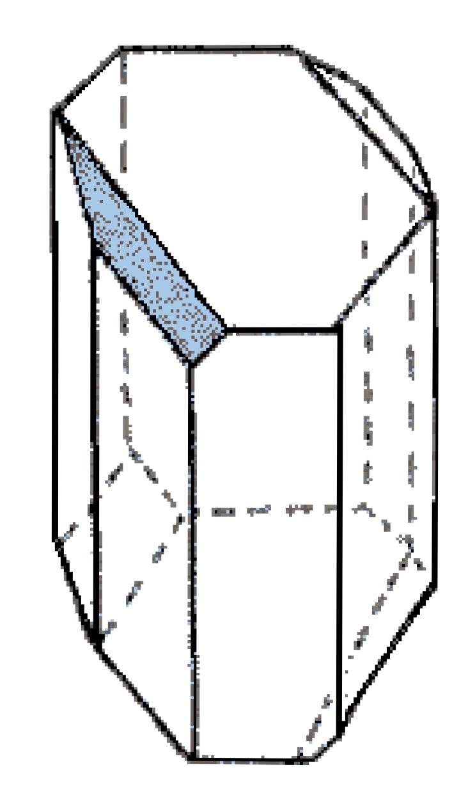

Guiding Question
What if you consume food of wrong chirality?
A presentation by Ryan (Tiannu) Zhang
Background Information
How I got to know about enantiomers
The Thalidomide Tragedy
In the 1950s, Thalidomide was introduced as a morning sickness drug for pregnant women.
However, severe birth defects are reported.
In the "identical" molecules above, simply because there's a
chiral center present, one of which became a poison that causes severe birth defects,
while the other is effective in alleviating morning sickness.
The overlook of enantiomers has caused over 24,000 babies with congenital disabilities.
Therefore, I choose to look into the world of enantiomers and how they could possibly affect our lives.
Thankfully, after checking with our guest speaker, I realized that our bodies are perfectly capable of producing
molecules that have correct configuration of chirality.
One less thing to worry about!
Two Major Concepts To Cover
1. Enantiomers

Keywords:
1. Superimpose
2. Stereochemistry
3. R/S Configuration
4. Optical rotation
5. Isomers
Enantiomers are mirror images of molecules.
They are like your left and right hand. They look alike,
but they are essentially not the same, because they cannot be superimposed.
However, your hands may be able to perform the same function, but a little change in the stereochemistry
can have a substantial impact.
2. Chirality
Chirality determines whether the molecule has enantiomers
like the molecule Thalidomide.
Whether a molecule is chiral or not depends on its chirality center.
Chirality center is an atom that is connected to four different functional groups.
If the molecule doesn't have chirality center (a.k.a. Achiral), then we're safe. There will be no scary enantiomers of it that could cause tragic effects.
Keywords:
1. Cahn-Ingold-Prelog rules
2. Optical Activity
3. Dextrorotatory
4. Levorotatory
5. Enantioselective
Reference Page
1. Unnatural Amino Acids by Loredano Pollegioni and Stefano Servi
This book talks about the non-proteinogenic amino acids, which are amino acids of the opposite chirality compared to the ones in our proteins. This is extremely relevant to my topic because amino acids are the building blocks of proteins and that are specifically related to food. We have many types of amino acids in our bodies, yet only one of them is achiral. Therefore it would be interesting to discover the synthesis of amino acids of the opposite chirality and how it would affect its chemical property. Perhaps we couldn't digest it anymore?
2. Enantioselective Synthesis of Beta-Amino Acids by Eusebio Juaristi, and Vadim A. Soloshonok, John Wiley & Sons
Expanding on the last reference, this also talks about the synthesis of amino caids enantioselectively. This book covers natural products that contain Beta-Amino Acids. But then again, I would expect to use this reference the same way I use the previous one.
3. Ability of rumen protozoa Diploplastron affine to utilize β-glucans by Grzegorz Belzecki, Renata Miltko, & Tadeusz Michalowski
Glucose, which forms starch, is an essential part of our everyday diet. There's corn, bread, potato, wheat, etc. The glucose that we digest is in D configuration. In this regard, what if it becomes L-enantiomeric? This article covers how they would analyze how algae utilizes β-glucans. If humans can't digest it, how about algae?
4. High-Throughput Capillary Electrophoresis–Mass Spectrometry: From Analysis of Amino Acids to Analysis of Protein Complexes by Mehdi Moini
This book analyzes the amino acids in the aspect of stereochemistry --- their enantiomers. In addition, this book also analyzes the amino acids in a macroscopic level --- proteins. This would be relevant to my research since I don't have access to advanced lab equipments and the conducted research would facilitate my understanding in amino acids of different configurations.
5. Proteases: Structure and Function by Brix, Klaudia & Stöcker, Walter
This book analyzes the the strucutre an function of proteases, which are the enzymes responsible for digesting amino acids. Looking into the strucutre and function of proteases can help me to understand why we can only digest amino acids of mostly L-configuration.
6. Modeling of cooked starch digestion process using recombinant human pancreatic α-amylase and maltase-glucoamylase for in vitro evaluation of α-glucosidase inhibitors by Xiaofang Cao, Chen Zhang, Yangyang Dong, et al.
Since not only do I plan to investigate the enantiomers of amino acids, but also glucose, it is only reasonable to look into the enzyme that digests starch. This book provides a comprehensive overview of starch digestion, which, simmilar to proteases, would help me to understand the orientation of human pancreatic α-amylase and maltase-glucoamylase.
7. Formation of taste-active amino acids, amino acid derivatives and peptides in food fermentations – A review by Cindy J.Zhao, Andreas Schieber & Michael G.Gänzle
Thalidomide has a huge effect on the human body, it is only reasonable to wonder if enantiomers of amino acids would taste different. Besides, this book also covers many aspects of amino acids.
8. Practical synthetic organic chemistry reactions, principles, and techniques by Caron, Stéphane
I do not have a robust understanding in organic chemistry yet. Therefore I would like to learn more about them in the book, which for sure covers stereochemistry, and will enhance my understanding. To make tenable hypothesis, I would need more information in organic chemistry. Consequently, a introductory textbook in organic chemistry would help.
Thanks for Watching!